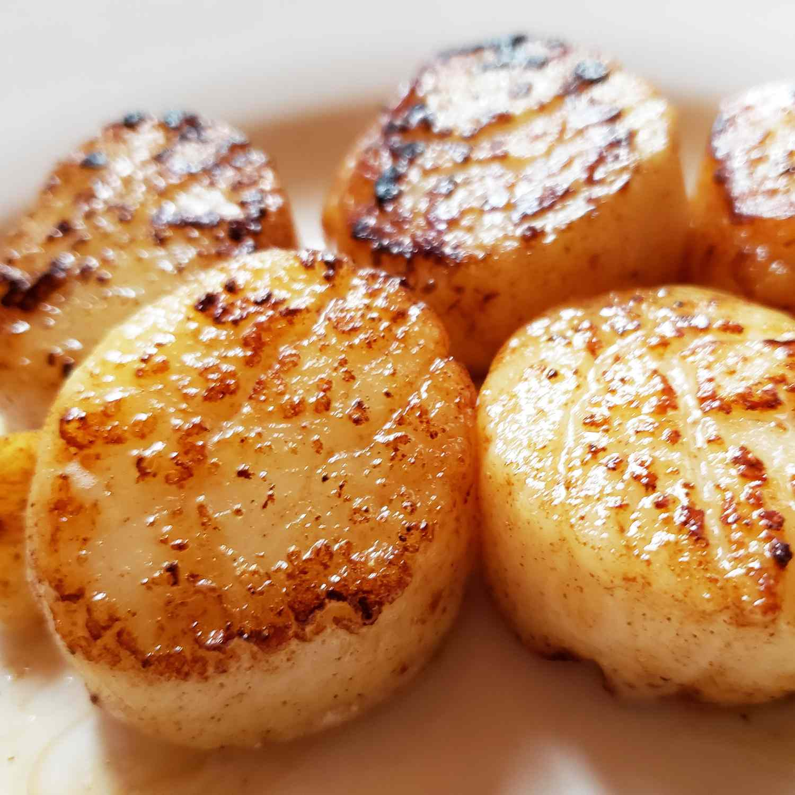

Easy Garlic-Lemon Scallops

Description
In this simple scallop recipe, large sea scallops are sautéed in butter and garlic and
served with a lemon-butter sauce. They will melt in your mouth!
Ingredients
- Butter
- Garlic
- Scallops
- Lemon Juice
- Seasonings
Instructions
- Cook the garlic in melted butter
- Cook the scallops on both sides until opaque, then transfer to a platter
- Whisk the lemon juice and seasonings into the butter, then pour over the scallops